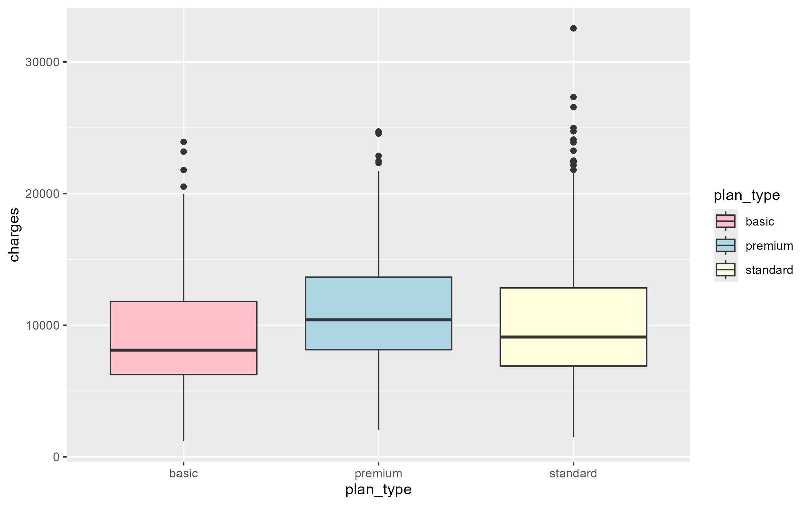
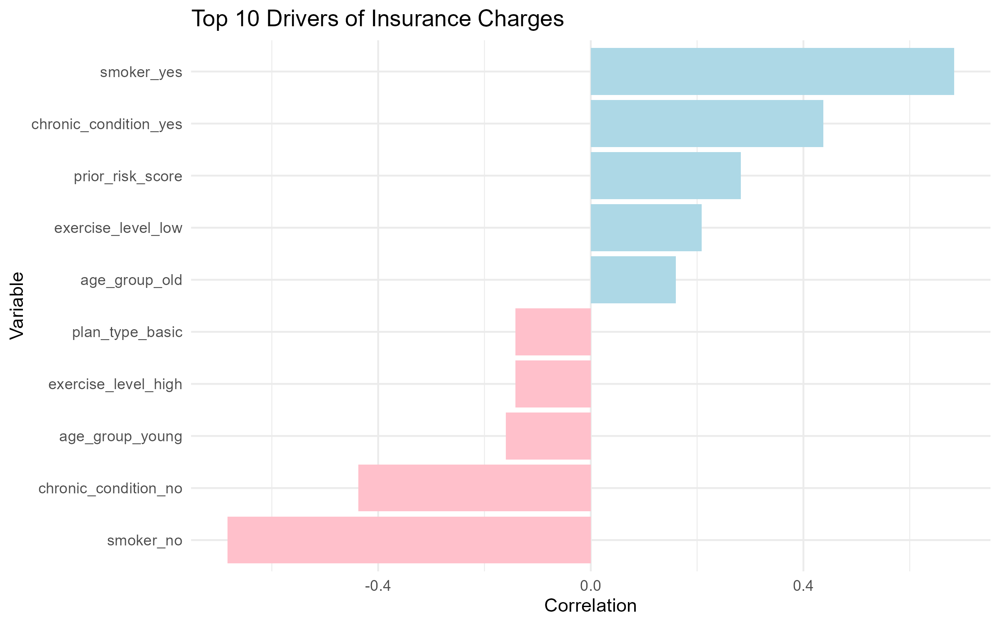
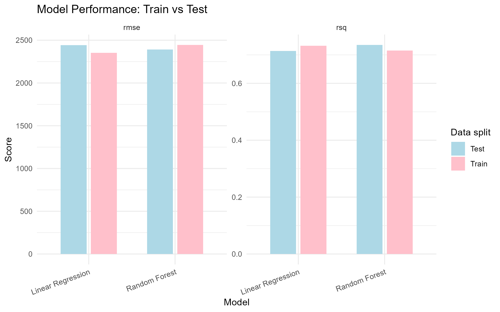
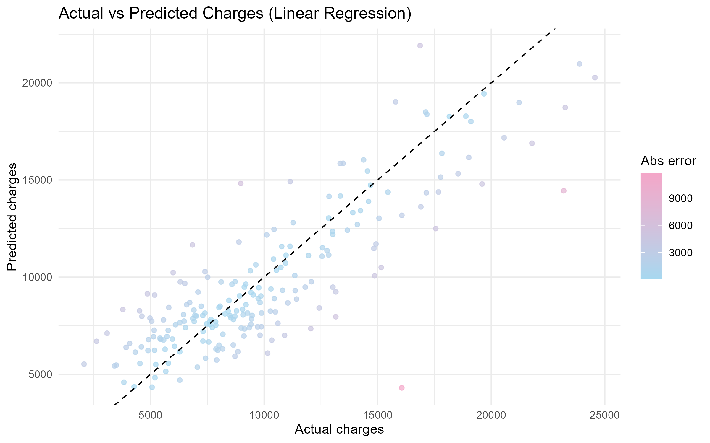
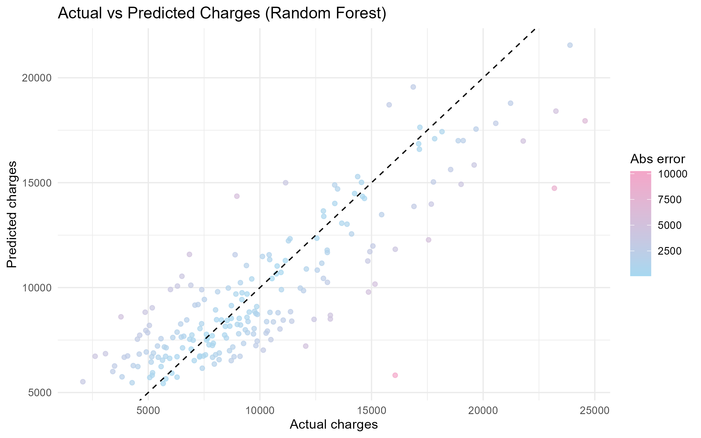

Försäkringskostnader – analysera vilka faktorer som hänger ihop med kostnader
Syfte
Målet är att analysera ett dataset med kundinformation för att identifiera vilka faktorer som har störst påverkan på försäkringskostnader. Genom explorativ dataanalys ska samband i datat kartläggas och viktiga variabler lyftas fram.
Vidare syftar övningen till att utveckla och utvärdera en regressionsmodell i R, med fokus på att förstå hur väl modellen kan förklara variationer i kostnader. Resultaten ska tolkas i ett affärssammanhang för att bedöma om modellen kan fungera som ett stöd vid framtida prissättning.
Metod
Inledningsvis utvecklades skript för att ladda in och förbereda datat. Detta inkluderade att identifiera och hantera inkonsekvenser samt saknade värden. Variablernas datatyper granskades och justerades vid behov för att säkerställa att de var korrekt formaterade, vilket skapade förutsättningar för mer tillförlitliga och meningsfulla analyser i efterföljande steg.
För analysen användes en applikation utvecklad i Shiny för att undersöka sambandet mellan varje enskild variabel och försäkringskostnaderna. Resultaten från denna explorativa analys låg till grund för urvalet av relevanta variabler som senare inkluderades i modelleringen.
Vid modelleringen tillämpades både linjär regression och Random Forest för att utvärdera hur väl kostnaderna kan prediceras baserat på de utvalda variablerna. Syftet var att jämföra modellernas prediktiva förmåga och få en bredare förståelse för datats struktur.
Efter genomförd träning och testning genomfördes en felanalys för att identifiera systematiska avvikelser i modellernas prediktioner samt för att upptäcka eventuella outliers i det ursprungliga datasetet. Denna analys bidrar till en fördjupad förståelse av modellernas begränsningar och ger vägledning för hur resultaten bör tolkas och användas i framtida tillämpningar.
Resultat
Korrelation mellan variabler och försäkringskostnader

Vi kan ser att datamängden innehåller en outlier inom standardförsäkringen.
Variables VS charges Dashboard
Numeric Features
Categorical Features
Average Charges by Category
Vid analys av både numeriska och kategoriska variabler framkommer att ålder, tidigare olyckor, rökstatus, kroniska sjukdomar samt fysisk aktivitetsnivå har störst påverkan på försäkringskostnaderna.
Som förberedelse inför nästa steg i regressionsanalysen har nya variabler skapats i form av åldersgrupper samt en sammanslagen variabel för tidigare skadehistorik, där olyckor ges större vikt än anspråk. Samtidigt kommer extremvärden samt variabler utan tydlig koppling till kostnaderna (såsom kön, antal barn, region, kund-ID och försäkringstyp) att exkluderas för att förenkla modellen och förbättra dess tolkningsbarhet.

Regression analysen

Linjär regression presterar något bättre på träningsdatan (lägre RMSE och högre R²), vilket indikerar en starkare anpassning till träningsdatasetet. På testdatan visar dock Random Forest en marginellt bättre prestanda (lägre RMSE och högre R²), vilket tyder på bättre generaliseringsförmåga till tidigare osedd data.
Det lilla gapet mellan tränings- och testresultat för båda modellerna indikerar att ingen större överanpassning förekommer, även om linjär regression verkar anpassa sig något mer till träningsdatan.
Sammantaget presterar båda modellerna likvärdigt och förklarar cirka 70–73 % av variationen i försäkringskostnaderna, där Random Forest har ett svagt övertag i prediktiv förmåga.
Linjär regression fungerar som en stabil och lättkommunicerad baslinje. Tillsammans ger modellerna en bra balans mellan tolkbarhet och prediktiv förmåga.
Residual anaylsen


Den mest intressanta observationen är rad 1 — en ung icke-rökare med lågt BMI (18,2), riskpoäng 0 och försäkringskostnader på 16 059. Båda modellerna missar denna observation kraftigt (ca 10–12k fel), eftersom inga av de tillgängliga variablerna förklarar utfallet. Detta är sannolikt en extrem observation med en oupptäckt drivande faktor, exempelvis ett engångsbesök, en olycka eller en diagnos som inte fångas i datamängden.
De två negativa felen (där modellerna överskattar kostnaderna) är också informativa. Rad 3 i linjär regression och rad 7 i Random Forest gäller samma individ — en rökare med måttligt BMI och riskpoäng 2 som endast genererade 8 967 i kostnader. Detta tyder på att rökare med vissa mellanliggande profiler i genomsnitt kostar mindre än modellen förutspår, vilket indikerar att rökningseffekten sannolikt övervärderas för denna delgrupp.
Utöver detta syns ett tydligt mönster av systematisk underskattning av patienter med höga kostnader, vilket pekar på saknade interaktioner mellan rökstatus, kroniska sjukdomar och BMI i modellen.
Slutsatser & Begränsningar
Det är definitivt möjligt att använda modeller för att prediktera framtida försäkringskostnader, eftersom det finns tydliga mönster i den tillgängliga datan som modellerna kan utnyttja. Modellerna kan förklara cirka 70–73 % av variationen i försäkringskostnaderna.
Samtidigt kan extremvärden (outliers) påverka resultaten kraftigt utan att det alltid finns en tydlig förklaring. Därför rekommenderas att mer detaljerad data samlas in för dessa observationer, exempelvis medicinska händelser eller engångskostnader som inte fångas i nuvarande variabler. Nästa steg bör även inkludera vidare förbättring av modellens feature engineering samt test av fler modelltyper för att undersöka om prediktionsförmågan kan förbättras ytterligare.
En potentiell risk är att modellen överskattar eller underskattar kostnader för specifika kundgrupper, särskilt där viktiga interaktioner mellan variabler saknas i datan. Det är därför viktigt att kontinuerligt validera modellen mot ny data och säkerställa att den inte används som enda beslutsunderlag i prissättning, utan som ett stöd i kombination med expertbedömning.